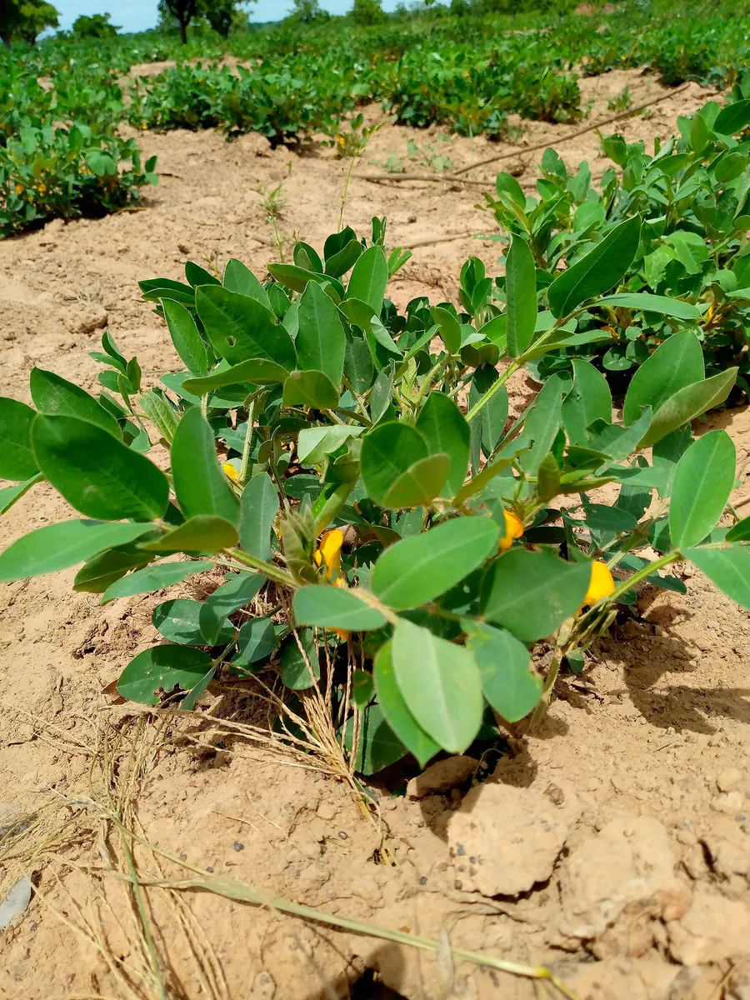
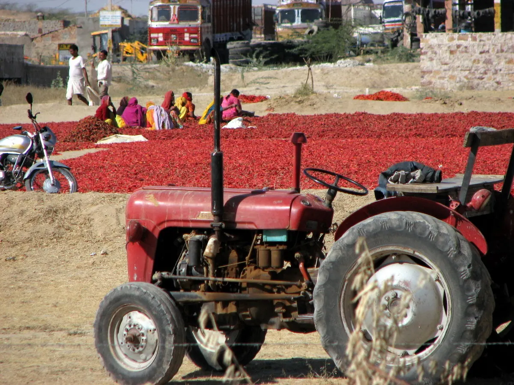

मल्टीक्रॉप थ्रेशर
कई फसलों के लिए एक मशीन। मिश्रित खेती वाले किसानों के लिए।
गेहूँ, बाजरा, ज्वार, चना, सोयाबीन
मशीन देखेंहमारा मूंगफली थ्रेशर सूखी बेल से फलियाँ तेज़ी से अलग करता है और दाने साबुत रखता है। फली के आकार के अनुसार छलनी लगती है। ट्रैक्टर PTO या इलेक्ट्रिक मोटर से चलता है और विसनगर, गुजरात में बनता है।



| फसलें | मूंगफली |
|---|---|
| चलाने का तरीका | ट्रैक्टर PTO / इलेक्ट्रिक मोटर |
| फ्रेम | फैब्रिकेटेड स्टील फ्रेम, व्हील के साथ |
| सफ़ाई | फली के आकार के अनुसार छलनी |
| विकल्प | आपके ट्रैक्टर HP के अनुसार पुली सेट, अतिरिक्त छलनी |
| क्षमता और पावर | मॉडल के अनुसार। फैक्टरी से संपर्क करें |
सूखे मूंगफली के पौधे फीड ओपनिंग में डालें।
ड्रम फलियों को बेल से अलग करता है।
छलनी मिट्टी और पत्ते हटाती है, फलियाँ इकट्ठा होती हैं।
दाने और फली साबुत रहें, इस तरह बना है। अपनी किस्म बताइए, हम सलाह देंगे।
हाँ। फली के आकार के अनुसार छलनी लगाते हैं।
हाँ। ऑर्डर के समय PTO या इलेक्ट्रिक मोटर चुनें।